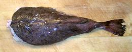
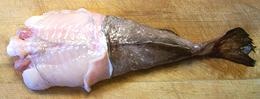
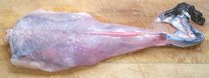
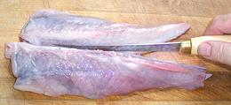
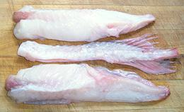
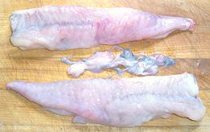

Monkfish is not a swimmer, but an ambush hunter that blends into the sea floor. It is mostly a huge, ugly, inedible bony head with a small tail sticking out the back side of it. This explains why you'll never see a whole monkfish in the fish market - only the tail is sold. The American Monkfish can grow to 47 inches and 57 pounds, the European to 78 inches and 127 pounds but these figures are meaningless since most of the fish is inedible.
The European Monkfish is found from the Arctic seas north of Finland and around Iceland, down through the Mediterranian and along the west coast of Africa as far south as the northern border of Angola. Some have been reported from the coast of New England. The American is found from northeastern Florida to Newfoundland, Canada, but is rare south of North Carolina or north of Quebec. The European is considered heavily over-fished, though still IUCN Red List LC (Least Concern), while the American is IUCN Red List NE (Not Evaluated). Monkfish makes no effort whatever to be kosher. Photo by Meocrisis distributed under license Creative Commons Attribution-ShareAlike v3.0 unported.
More on Varieties of Fish
(very large page).
|






|
Monkfish is highly sought after for the unique characteristics of it's flesh. It somewhat resembles lobster in flavor and stays firm and solid even if overcooked. This makes it excellent for grilling on skewers, because it won't crumble and fall off. It is a costly fish, tails selling for 2006 US $6.00 / pound in Korean markets here in Los Angeles. Yield: A 1.3 pound monkfish tail yielded 15 oz of clean flesh (72%). Stock: The bones, skin, fins, membranes etc. make a very nice mild soup stock, but one fish isn't going to make a whole lot of it so blend with other mild fish stock if you need more. Monkfish is very easy to process because most of the work has already been done.
|
sf_monkzz 060723 - www.clovegarden.com
© Andrew Grygus 2011 - info@clovegarden.com -
Photos on this page not otherwise credited are ©
cg1.
Linking to and non-commercial use of this page permitted.